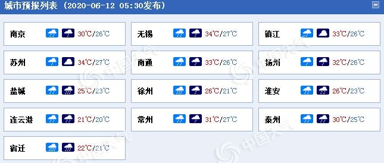

2020-06-12 07:48:12 来源： 中国天气网
中国天气网讯 强降雨来袭！今天（12日）到14日，江苏将有一轮强降雨天气过程，部分地区有大到暴雨，局地大暴雨，并伴有强对流天气。公众需留意临近天气预报，注意防范。
昨天白天，江苏雨水较少，大部地区以多云到阴为主。雨水让道，炎热就成了主角，西北部地区偏高，普遍在32-33℃，东部沿海地区要凉快一些，在26-27℃，剩下的大部分地区则在30-31℃。
夏季的天气总是说变就变，昨天夜间开始，新一轮的强降雨就逐渐展开。江苏省气象台预计，今后三天全省有一次强降水过程，并可能伴有强雷电、短时强降水、雷暴大风等强对流天气。
具体来看，预计今天全省阴有阵雨或雷雨，雨量江淮之间和淮北地区大到暴雨，局部大暴雨，其它地区中雨，局部大到暴雨。

江苏各城市天气预报。（数据来源：天气管家客户端）
明天，沿淮及以南地区阴有阵雨或雷雨，雨量中到大雨，局部暴雨，其它地区阴有阵雨或雷雨并渐止转阴到多云。
后天，淮河以南地区阴有阵雨或雷雨，其中沿江和苏南地区雨量中到大雨，局部暴雨，其它地区多云。
气象专家提醒，公众需注意防范强降水可能造成的城乡内涝及山体滑坡等次生灾害，防范强对流天气对交通运输及户外作业的影响。